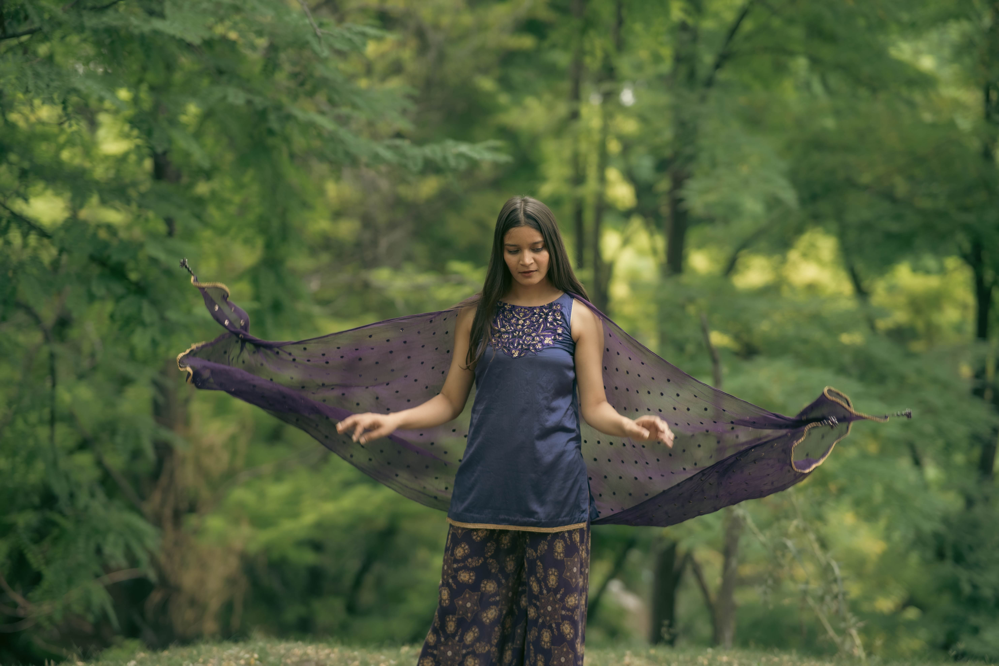

.svg) inficaptures
inficaptures
Rooted in the Valley
Born and raised in the heart of Kashmir, We grew up amidst
snow peaks, saffron blooms, and stories whispered by the wind.
inficaptures
Born and raised in the heart of Kashmir, We grew up amidst
snow peaks, saffron blooms, and stories whispered by the wind.
Inficaptures is a creative photography and videography studio co-founded by a passionate duo who believe in capturing emotions, stories, and moments that last forever. From dreamy pre-wedding shoots to high-impact product commercials, Inficaptures transform visions into vibrant visual narratives.
InfiCaptures serves modern couples looking to immortalize their love stories, businesses seeking captivating product visuals, and individuals or brands who value storytelling through professional, cinematic imagery.
In a world overloaded with content and rushed timelines, people often struggle to find photographers who don’t just “take pictures” but truly capture the essence of a moment or brand. InfiCaptures helps overcome this by offering deeply personalized, emotionally rich, and professionally edited visual content that stands out and connects.
“Modern shoot studio with professional equipment, perfect lighting, and versatile backdrops for every photography need.”
“Expert fine retouching for flawless, natural-looking photos that enhance beauty while preserving authenticity.”
“Comprehensive photo editing services to enhance colors, correct imperfections, and bring your images to life.”
“High-quality videoshooting services with creative storytelling, professional equipment, and seamless editing for unforgettable visual experiences.”
“Capturing the magic of your special day with timeless, romantic wedding photography that tells your love story.”
“State-of-the-art print studio delivering vibrant, high-resolution prints on premium materials for lasting memories.”
Once upon a time in the beautiful landscapes of Kashmir, a photographer with an eye for emotion met a storyteller with a vision for connection. Together, they saw a gap in the way moments were being captured—beautiful photos, yes, but lacking the soul that made them unforgettable.
Once upon a time in the beautiful landscapes of Kashmir, a photographer with an eye for emotion met a storyteller with a vision for connection. Together, they saw a gap in the way moments were being captured—beautiful photos, yes, but lacking the soul that made them unforgettable.
Every photograph has a story waiting to be felt. We turn ordinary moments into timeless visual memories.
Explore Our Work